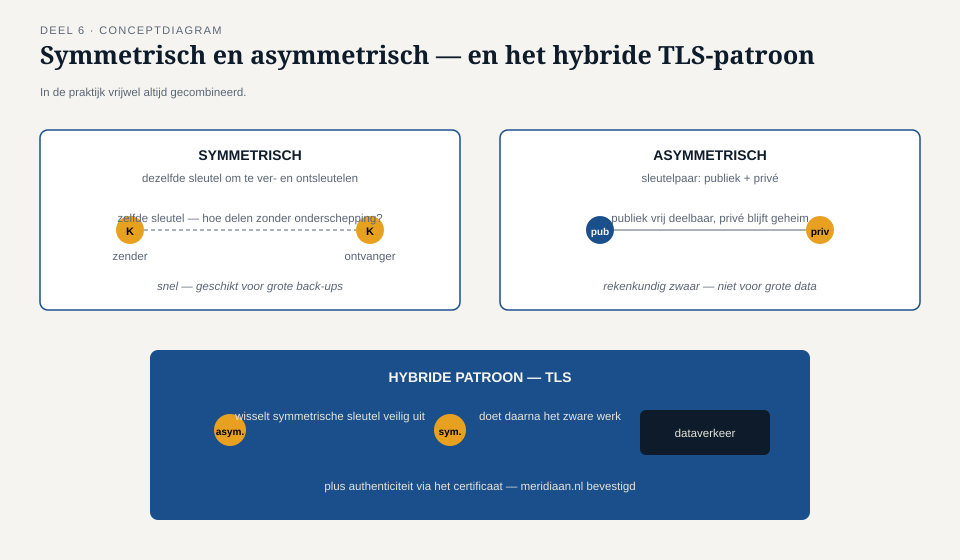
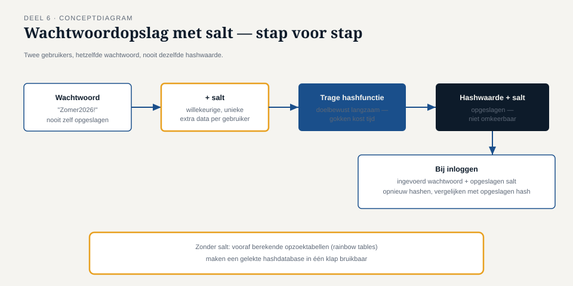
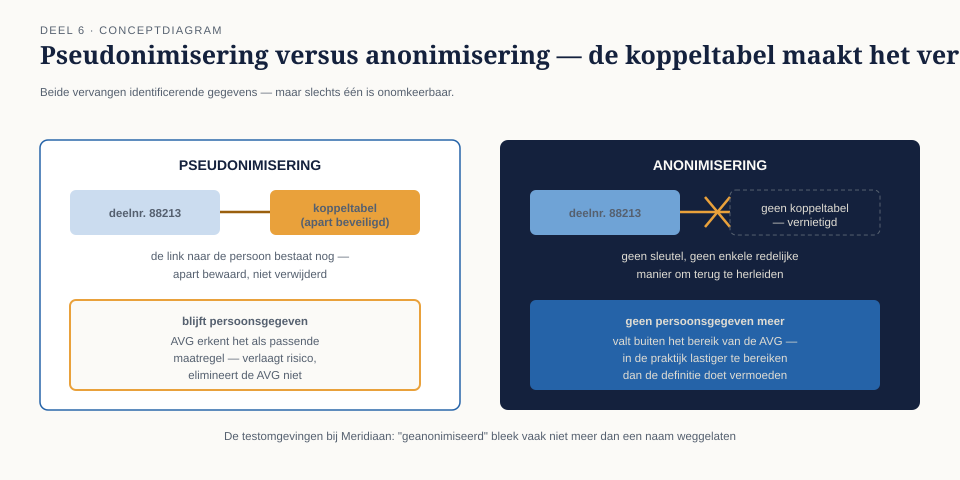

Deel 6 — Cryptografie voor niet-cryptografen
Reader · Ductus-cursus Informatiebeveiliging en privacy · niveau 1 (fundament) · deel 6 van 10
Casusvervolg: het woord dat iedereen gebruikt en bijna niemand kan uitleggen
Tijdens de opruiming van de accounts in deel 5 valt Merel iets op: in bijna elk gesprek met Tarik en Ruud komt het woord "versleuteld" voorbij, meestal als geruststelling. "Dat wachtwoordbestand? Dat is versleuteld." "Die back-up? Versleuteld." "Het verkeer naar het portaal? Uiteraard versleuteld." Als Merel doorvraagt — versleuteld waarmee, hoe, en wie heeft de sleutel — krijgt ze wisselende, soms tegenstrijdige antwoorden.
Dat is het probleem met "versleuteld" als geruststelling: het is geen technisch begrip, het is een bezwerende formule geworden. Dit deel geeft je genoeg begrip van cryptografie om door die formule heen te vragen — niet om zelf cryptografische systemen te bouwen (dat is geen doel van deze cursus), maar om de juiste vragen te kunnen stellen en een antwoord te kunnen beoordelen.
1. Wat versleuteling wel en niet oplost
Versleuteling (encryptie) zet leesbare informatie (platte tekst) om in onleesbare informatie (cijfertekst) met behulp van een algoritme en een sleutel. Zonder de juiste sleutel is de cijfertekst — in theorie — niet terug te rekenen naar de platte tekst binnen een redelijke tijd, zelfs niet met veel rekenkracht.
Wat versleuteling oplost: het beschermt vertrouwelijkheid (de C uit CIA, deel 1) van gegevens die worden opgeslagen (data at rest) of verstuurd (data in transit). Wat versleuteling niet oplost: het zegt niets over of de verwerking rechtmatig is (deel 3), niets over of de gegevens juist zijn (integriteit vereist aparte mechanismen, zie paragraaf 4), en niets over wie er via een legitieme weg — met een geldig account en geldige rechten — toch bij de ontsleutelde gegevens kan. Dit laatste punt is precies waarom "het is versleuteld" bij Meridiaan geen volledig antwoord is: een medewerker met legitieme toegang ziet de platte tekst gewoon, versleuteling of niet. Versleuteling beschermt tegen iemand die de opslag of het verkeer onderschept zonder geldige toegang — niet tegen misbruik van geldige toegang.
2. Symmetrisch en asymmetrisch
Er bestaan twee families van versleuteling, met een fundamenteel verschillend sleutelmodel:
Symmetrische versleuteling gebruikt dezelfde sleutel om te versleutelen én te ontsleutelen. Dit is snel en efficiënt, geschikt voor grote hoeveelheden data — het versleutelen van een volledige back-up, bijvoorbeeld. Het probleem: hoe krijgen twee partijen dezelfde sleutel veilig in handen zonder dat een derde hem onderweg kan onderscheppen? Dit heet het sleuteldistributieprobleem, en het is precies het probleem dat de tweede familie oplost.
Asymmetrische versleuteling (ook wel public-key cryptografie) gebruikt een sleutelpaar: een publieke sleutel, die vrij gedeeld mag worden, en een private sleutel, die geheim blijft bij de eigenaar. Wat met de publieke sleutel is versleuteld, kan alleen met de bijbehorende private sleutel worden ontsleuteld — en andersom, wat essentieel is voor digitale handtekeningen (zie paragraaf 4). Dit lost het distributieprobleem op: je hoeft nooit een geheime sleutel te delen, alleen de publieke helft, die per definitie geen geheim is. De prijs: asymmetrische versleuteling is rekenkundig veel zwaarder dan symmetrische, en dus minder geschikt voor het versleutelen van grote hoeveelheden data in één keer.
In de praktijk worden beide families vrijwel altijd gecombineerd: asymmetrische versleuteling wordt gebruikt om op een veilige manier een symmetrische sleutel uit te wisselen, en die symmetrische sleutel doet vervolgens het zware werk van het versleutelen van de eigenlijke data. Dit hybride patroon is precies wat er gebeurt bij TLS, dat in paragraaf 3 aan bod komt.
3. Hashing: een andere bewerking met een ander doel
Een hashfunctie is geen versleuteling, ook al wordt het in de wandelgangen vaak door elkaar gehaald. Een hash zet invoer van willekeurige lengte om in uitvoer van vaste lengte (de hashwaarde), op een manier die niet omkeerbaar is: er bestaat geen sleutel om van de hashwaarde terug te rekenen naar de oorspronkelijke invoer. Bovendien geldt: dezelfde invoer levert altijd dezelfde hashwaarde op, en een minieme wijziging in de invoer levert een compleet andere hashwaarde op.
Dat maakt hashing geschikt voor twee heel verschillende doelen dan versleuteling:
- Integriteitscontrole — als je de hash van een bestand vooraf kent, kun je later controleren of het bestand ongewijzigd is gebleven door de hash opnieuw te berekenen en te vergelijken. Elke wijziging, hoe klein ook, verandert de hash volledig.
- Wachtwoordopslag — een systeem hoort nooit het wachtwoord zelf op te slaan, maar de hash ervan. Bij het inloggen wordt het ingevoerde wachtwoord opnieuw gehasht en vergeleken met de opgeslagen hash. Zo kan het systeem controleren of een wachtwoord correct is, zonder het wachtwoord ooit zelf te hoeven bewaren — en zonder dat een lek van de wachtwoorddatabase de wachtwoorden zelf prijsgeeft (mits goed geïmplementeerd, zie hieronder).
Een veelvoorkomende fout is het gebruik van een te simpele, snelle hashfunctie voor wachtwoorden. Een aanvaller met een gelekte hashdatabase kan met genoeg rekenkracht miljarden gokken per seconde uitproberen tegen een snelle hash. Wachtwoordspecifieke hashfuncties zijn daarom doelbewust traag gemaakt, en gecombineerd met een salt — willekeurige extra data per wachtwoord — zodat twee gebruikers met hetzelfde wachtwoord niet dezelfde hashwaarde krijgen, wat vooraf berekende opzoektabellen (rainbow tables) onbruikbaar maakt.
4. TLS en certificaten
Wanneer een deelnemer inlogt op het portaal van Meridiaan, ziet hij een slotje in de browser. Dat slotje staat voor TLS (Transport Layer Security, de opvolger van het oudere en niet meer veilige SSL — de term "SSL" wordt in de praktijk nog vaak gebruikt, maar bedoelt tegenwoordig bijna altijd TLS). TLS beveiligt de verbinding tussen browser en server met precies het hybride patroon uit paragraaf 2: asymmetrische versleuteling voor de initiële sleuteluitwisseling, gevolgd door snelle symmetrische versleuteling voor het daadwerkelijke dataverkeer.
Maar TLS doet meer dan alleen versleutelen — het levert ook authenticiteit van de server via een certificaat: een digitaal document, uitgegeven door een vertrouwde certificaatautoriteit, dat de publieke sleutel van een server koppelt aan een geverifieerde identiteit (bijvoorbeeld het domein meridiaan.nl). Zonder dat certificaat zou een browser niet kunnen onderscheiden tussen de echte server van Meridiaan en een nagemaakte server die zich voordoet als Meridiaan — precies het scenario van phishing uit deel 2, waar een nagemaakte inlogpagina slachtoffers verleidt.
Dit maakt TLS tot een mooi voorbeeld van waar cryptografie meerdere doelen tegelijk dient: vertrouwelijkheid (versleuteling van het verkeer) én authenticiteit (het certificaat bevestigt wie je werkelijk spreekt) én, via bijbehorende mechanismen, integriteit (elke tussenkomende manipulatie van het verkeer wordt gedetecteerd).
5. Pseudonimisering en anonimisering: het AVG-relevante onderscheid
Waar versleuteling en hashing technische bewerkingen zijn, zijn pseudonimisering en anonimisering juridisch-technische begrippen die rechtstreeks uit de AVG (deel 3) voortkomen — en het onderscheid ertussen wordt in de praktijk vaak verkeerd begrepen, met reële gevolgen.
Pseudonimisering vervangt identificerende gegevens door een kunstmatige identificator (een pseudoniem), waarbij de koppeling terug naar de oorspronkelijke persoon apart en beveiligd wordt bewaard — bijvoorbeeld een deelnemersnummer in plaats van een naam, met een aparte, streng beveiligde koppeltabel. Cruciaal: gepseudonimiseerde gegevens blijven persoonsgegevens in de zin van de AVG, omdat de herleidbaarheid nog bestaat, ook al is ze niet direct zichtbaar. De AVG erkent pseudonimisering wel expliciet als een passende technische maatregel — het verlaagt het risico, het elimineert de AVG-verplichtingen niet.
Anonimisering verwijdert de herleidbaarheid onomkeerbaar — er bestaat geen sleutel, geen koppeltabel, geen enkele redelijke manier om de gegevens terug te herleiden tot een individu. Écht geanonimiseerde gegevens vallen buiten het bereik van de AVG, precies omdat ze geen persoonsgegevens meer zijn.
De praktijk is hier lastiger dan de definitie doet vermoeden: veel "anonimisering" die organisaties toepassen (bijvoorbeeld het weglaten van een naam, maar niet van postcode, geboortedatum en geslacht) is in werkelijkheid slechts pseudonimisering of zelfs nog minder, omdat combinaties van op zichzelf onschuldige velden vaak alsnog tot een individu herleidbaar zijn. Dit is precies waarom de testomgevingen bij Meridiaan (deel 1, deel 8) een probleem zijn: als daar "geanonimiseerde" productiedata staat die in werkelijkheid slechts oppervlakkig is bewerkt, is de AVG nog steeds onverkort van toepassing, en het probleem dus groter dan iedereen aannam.
6. Sleutelbeheer: het eigenlijke probleem
Na dit alles komt de cursus bij de kern die Tarik en Ruud in hun geruststellingen steevast oversloegen: versleuteling is maar zo goed als het beheer van de sleutel. Een paar vragen die elke geruststelling "het is versleuteld" zou moeten kunnen doorstaan:
- Wie heeft toegang tot de sleutel? Als iedereen met toegang tot het systeem ook toegang heeft tot de sleutel, is de versleuteling van de opslag zelf grotendeels theoretisch — een aanvaller die het systeem overneemt, neemt de sleutel gewoon mee.
- Waar wordt de sleutel bewaard, en gescheiden van wat? Sleutel en versleutelde data in dezelfde kluis bewaren ondermijnt het hele idee.
- Hoe wordt de sleutel geroteerd? Een sleutel die nooit verandert, is een sleutel die — als hij ooit lekt — voor altijd en met terugwerkende kracht een probleem blijft.
- Wat gebeurt er met de sleutel als iemand met sleuteltoegang de organisatie verlaat? Dit is exact het joiner-mover-leaver-vraagstuk uit deel 5, nu toegepast op cryptografische sleutels in plaats van systeemaccounts.
Deze vragen keren later in de cursus terug in een specifieke en verrassende vorm: in de databasecursus, waarnaar deze cursus in deel 21 (niveau 2) verwijst, wordt "crypto-shredding" behandeld — het vernietigen van een sleutel als methode om aan het recht op vergetelheid te voldoen zonder onderliggende gegevens fysiek te hoeven wissen. Dat is precies waarom sleutelbeheer niet een louter technisch detail is, maar een onderwerp dat rechtstreeks aan privacyverplichtingen raakt.
7. Terug naar het gesprek met Tarik en Ruud
Met dit begrippenkader kan Merel voortaan doorvragen op een manier die verder komt dan een geruststellend "ja, versleuteld": welk type versleuteling, wie beheert de sleutel, is dit werkelijk pseudonimisering of anonimisering, en is TLS op de juiste manier geconfigureerd inclusief geldige certificaten? Dat zijn geen cryptografische vragen die een specialist vereisen om te stellen — het zijn precies de vragen die in deze cursus worden getraind: weten wat je moet vragen, beoordelen en eisen, zonder het zelf te hoeven bouwen.


